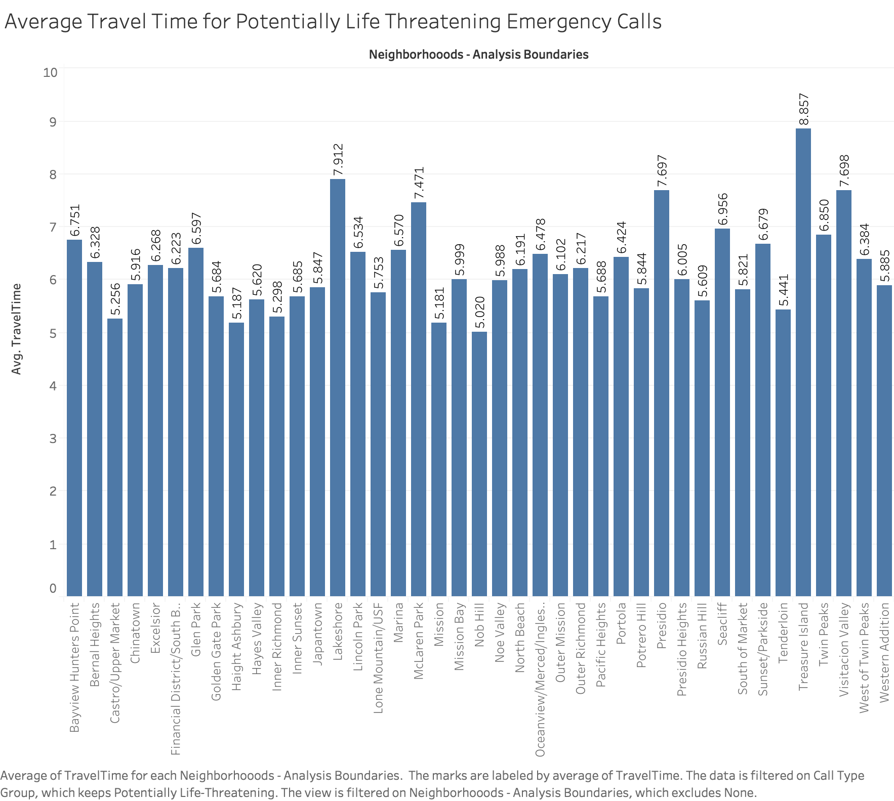

Divya's Prototypes
Interpretation
The graph shows the number of calls to SF fire department from different neighborhoods, categorised by CallTypeGroup.
The call type groups are Alarm, Fire, Non life threatening, and Potentially life threatening. The grapg is color encoded with call for better understanding.
For some records the categorization is not available. So it is characterised as Null.

The above graph shows the Average response time in minutes, for emergency calls from the neighborhoods of San Francisco.
It is color encoded in the increasing order of response time. The darker the color, more the response time.